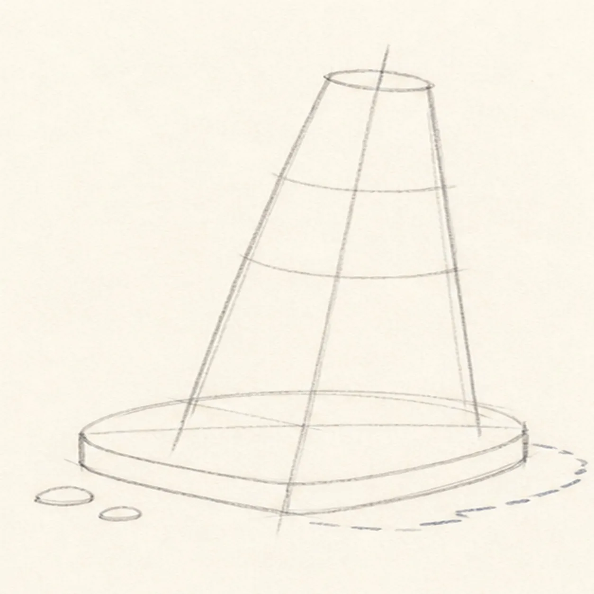
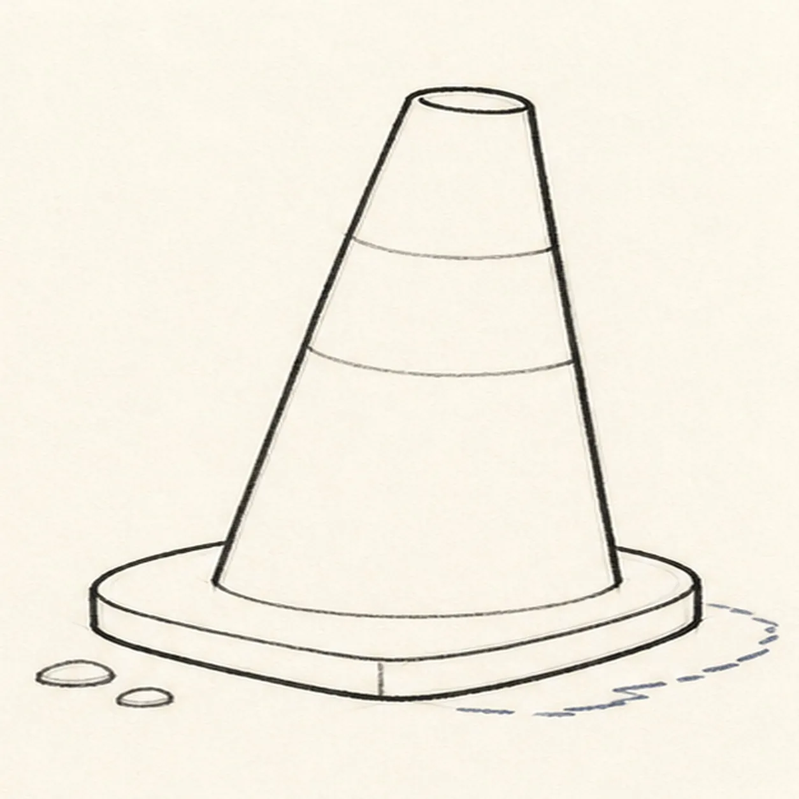
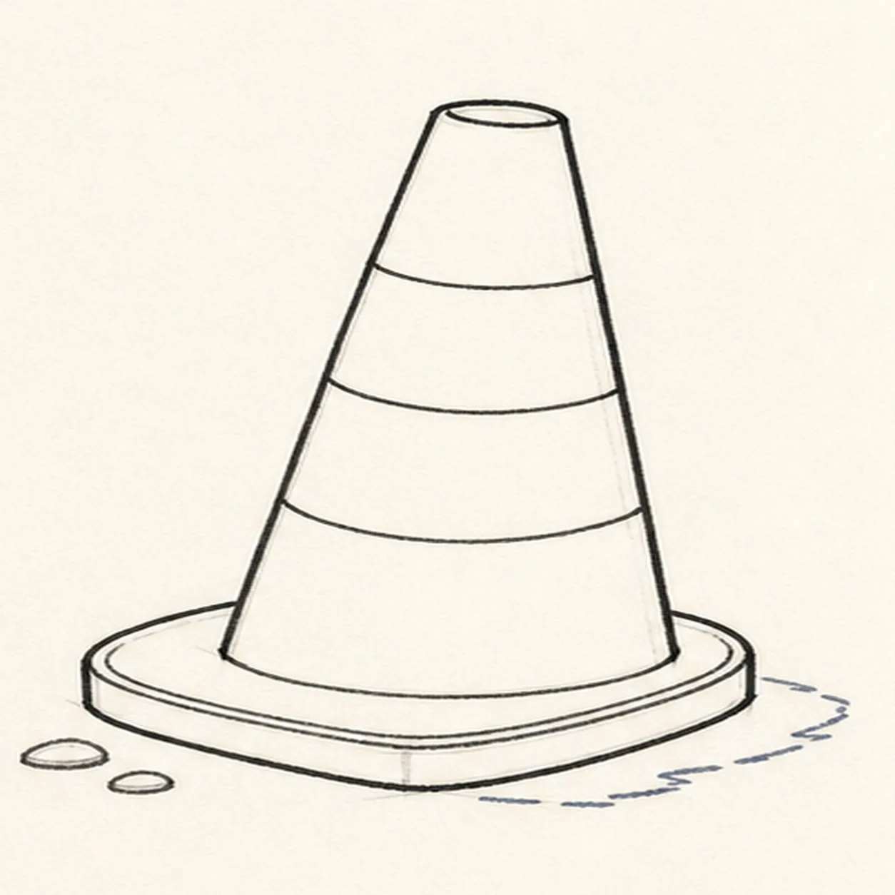
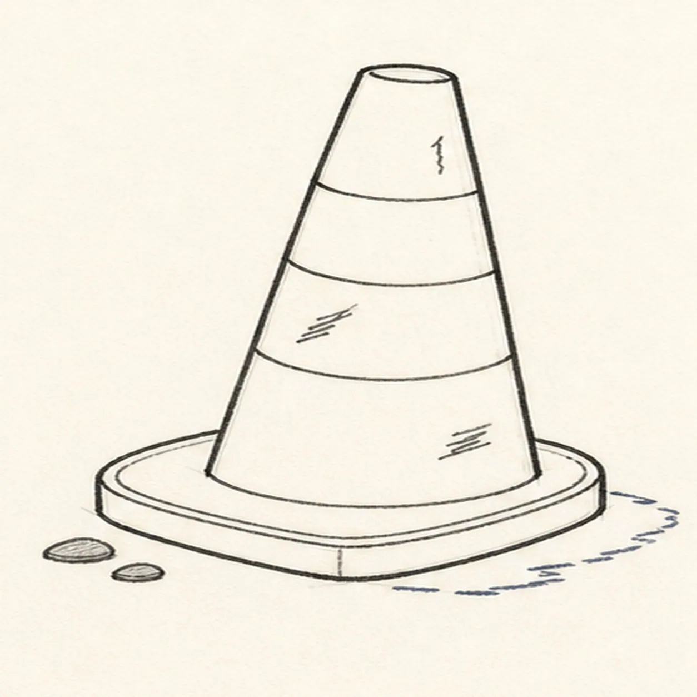
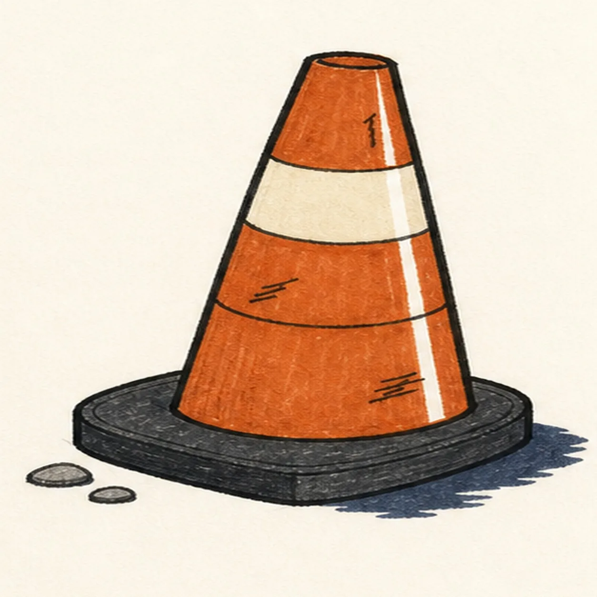

Felt-tip marker mode
Let's draw a traffic cone
Treat this as one playful practice round: sketch the idea loosely, simplify the shapes, then commit with confident marker outlines and bright fills.
-
01

Tilt the cone guides
Draw one pale leaning center axis, wrap it with a tapered cone envelope, then place the wide three-quarter base footprint, top opening, one broad band reserve between two curved guides, two pebble positions, and one offset shadow footprint.
Marker tip: Ghost the taper edges and base front before touching down. Compare the two empty wedges beside the cone so the slight lean feels intentional rather than accidentally crooked.
-
02

Build the safety silhouette
Wrap the guides with one tapered cone, a small oval top opening, one broad rubber base, the visible base top plane, and its front thickness while preserving the original lean.
Marker tip: Rotate the page for each long taper edge and pull it in one confident pass. Stop the cone body cleanly where it meets the base instead of drawing hidden orange detail underneath.
-
03

Wrap the reflective band
Clarify one broad curved reflective band around the established taper, keep one lower taper guide, and add one inset edge across the existing rubber base.
Marker tip: Curve the band boundaries with the cone instead of drawing two flat bars. Keep the cream area wider at the near edge so it follows the three-quarter view.
-
04

Scuff the road-ready details
Add exactly three short irregular scuff clusters to the cone, two pebble marks beside the base, one narrow paper highlight gap, and one broken offset shadow around the established silhouette.
Marker tip: Vary the three scuff clusters and leave more clean paper than wear. Place the two pebbles at different sizes so they support the perspective without turning into scenery.
-
05

Ink the safety orange
Thicken every established contour and fill the cone burnt orange, the broad band cream, the base charcoal, the shadow muted navy, and the two pebbles warm gray while preserving marker streaks and the paper highlight.
Marker tip: Pull orange strokes from the top opening toward the base so they follow the taper. Let the cream and orange dry before reinforcing their shared black edge.
-
06
![Handmade face-free marker drawing of one slightly right-leaning three-quarter traffic cone with a burnt safety-orange tapered body, one small dark oval top opening, one broad warm-cream reflective band, one lower curved taper guide, exactly three black scuff clusters, one narrow vertical paper highlight, one broad charcoal rubber base with a visible top plane and front thickness, exactly two warm-gray road pebbles, thick imperfect black outlines, visible dry-marker texture, and one broken muted-navy offset shadow](../assets/cartoon-traffic-cone-finished-v1.webp)
Set the cone firmly down
Strengthen the keeper outlines and clarify the established top opening, taper, reflective band, lower guide, three scuff clusters, two pebbles, rubber base, limited fills, paper highlight, and offset shadow.
Marker tip: Count one band, three scuff clusters, and two pebbles, then stop. A face, words, worker, car, extra cone, sticker edge, or badge frame would turn this clean safety-object study into a different lesson.